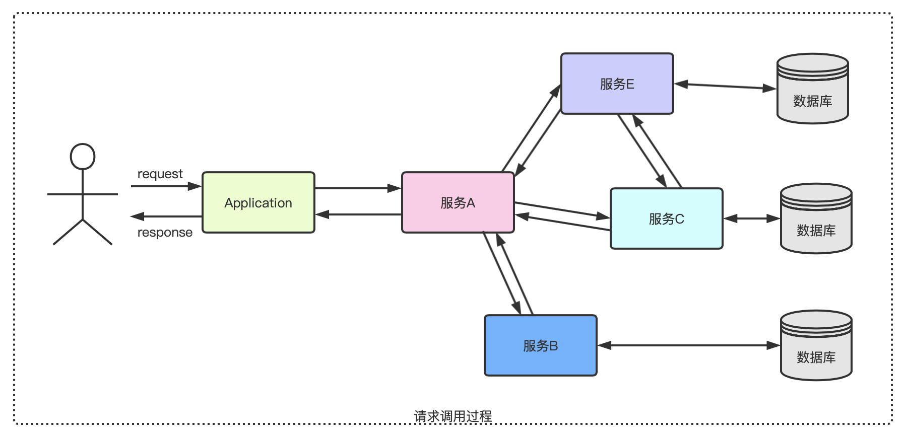
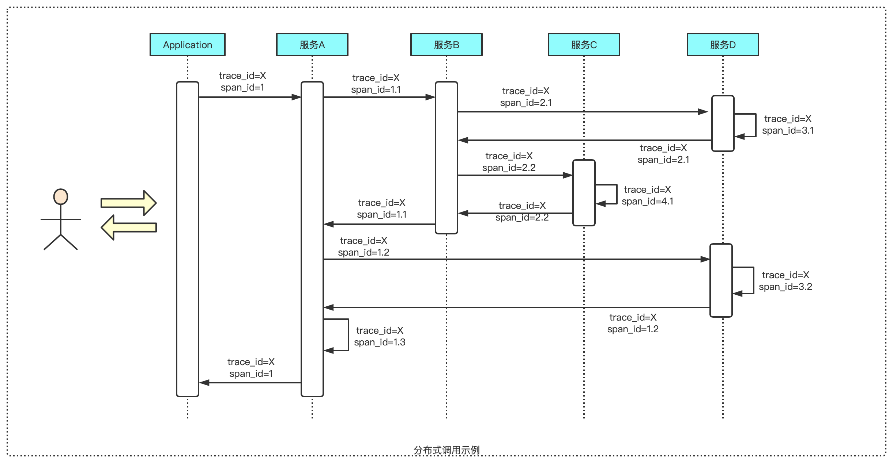
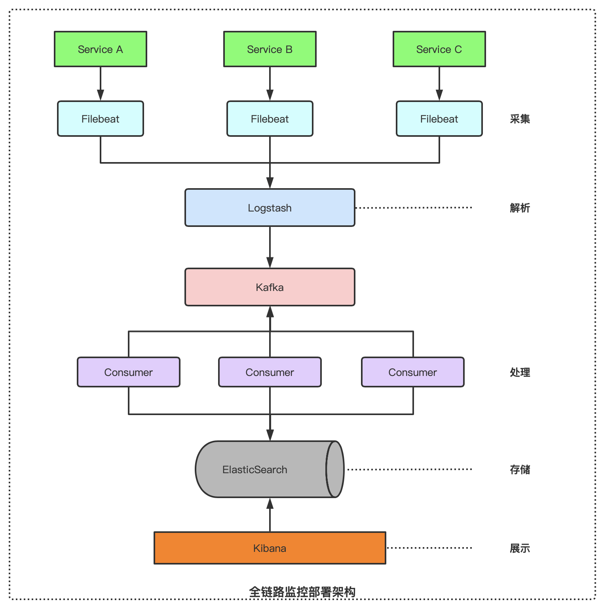

随着互联网的高速发展，变化日新月异，从单体到分布式，系统架构的不断演进，对于系统的监控需求也在不断加深。系统架构中的微服务概念推出，并且各种容器和云技术的发展，对于整个系统链路以及各个子系统的稳定运行是一项很大的挑战。
在微服务架构中，各个服务会按照不同的维度进行拆解分离，用户端的一次请求往往需要多个服务的交互响应。另外，各个服务由不同的团队进行开发，选用的编程语言也可能是不一样的，部署在不同的机器上，横跨多个数据中心。架构上的复杂度，导致程序出故障时，往往不能快速定位和解决问题，甚至跨部门跨团队沟通麻烦，增加不必要的人工成本。甚至是程序已经出故障一段时间了，运维人员还不知道，等到用户操作报错后反馈，才能知晓。
所以说，服务监控是非常有必要的，它能收集不同服务的系统行为信息，通过采样收集所需要的性能指标，帮助分析性能问题，并且在指标触达阀值时报警。
全链路监控（全链路追踪），也叫分布式监控系统。
分布式追踪领域有三个概念：Metrics、Trace、Log。
Metrics：指标，反映组件实时状况与健康情况
Trace：链路，反映在单次请求的范围内处理过程
Log：日志，反映程序执行的事件和过程
根据上述关系，全链路监控有两种做法：
A：通过指标查看组件的健康状态；再通过指标关联关系，查看整个运行的链路；最后，定位问题的日志，找出问题所在
B：当请求出现问题，首先查看出错的具体链路；再查看相对应的指标；最后查看详细的日志信息
在复杂的微服务架构系统中，几乎每一个请求都会形成一个复杂的分布式服务调用链路，如下图所示：

在服务各节点相互调用的时候，从中记录并传递一个应用级别的标识，这个标识可以用来关联各个服务之间的关系，随着服务之间的交互而一路传递下去，最后跟着结果一起返回。

如上图所示，每一次链路调用创建一个span（基本工作单元），通过一个64位uuid标识，不仅有ID标识，还包含工作单元的其它信息，如描述信息、时间戳、parent_id（链路请求来源）、完整链路跟踪ID（trace_id）等。
Trace，类似于树结构的Span集合，表示一次完整的跟踪。从客户端请求发送到服务器开始，服务器处理完成后返回response结束，跟踪每次rpc调用的耗时，每一次请求都会产生唯一标识trace_id。
调用过程追踪如下：
对整个调用过程的所有应用进行埋点并输出日志
对各个应用中的日志数据进行采集
对采集到的数据进行存储，由于日志数据量一般都很大，不仅要能对其存储，还需要能提供快速查询
对采集到的日志数据进行各种指标运算，将运算结果保存下来
提供各种阀值警告功能

一般全链路监控系统主要有四个部分：数据埋点、数据传输、数据存储、查询界面
监控系统应尽可能减少对业务系统的侵入，保持对使用方的透明性，减少开发人员的负担，降低接入门槛和难度。
由于全链路监控系统需要对各种应用中间件进行日志数据采集，大多数需要在业务系统中进行“埋点”或放置agent，特别是核心业务流程。我们应该尽可能降低对业务系统造成的性能影响。
为了尽可能降低接入成本，应该提供灵活的监控配置策略，让业务方决定是否接入，以及收集数据的范围和粒度，并提供对应的技术方案保证监控策略生效。
实时有效的监控数据展示功能，帮助相关人员理解系统行为，为流程、架构、代码优化，以及扩容缩容、服务限流降级提供正确客观的数据参考。